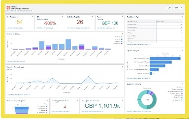
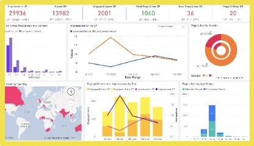
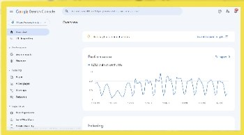

Global Processing Services (now Thredd) · Payments
Analytics Maturity & Measurement Framework
Took a payments business through four stages of analytics maturity — from web analytics to consolidated business intelligence — with KPIs, dashboards and training at every step.
- 4 stagesAnalytics maturity journey
- 4 platformsGoogle Analytics · HubSpot · Salesforce · Power BI
- Teams trainedStakeholder enablement on tools and frameworks
The challenge
As new platforms and reporting capabilities arrived, KPI definitions, dashboards and stakeholder confidence had to keep pace. Without that, each new tool risked adding another disconnected view instead of a clearer picture.
Objective
Give marketing and business stakeholders a clear, trusted view of campaign performance, customer behaviour and the GTM funnel, so resources and campaigns could be steered by evidence.
Approach
Review
At each maturity stage, reviewed KPIs and reporting requirements with stakeholders.
Configure
Configured platforms and built dashboards across Google Analytics, HubSpot, Salesforce and Power BI.
Improve
Identified performance-improvement opportunities and refined dashboards, measurement and reporting automation.
Enable
Trained internal teams and stakeholders on the platforms and reporting frameworks.
Outcomes
Reporting moved from manual pulls to automated dashboards across HubSpot, Salesforce, Excel macros, Google Data Studio and Power BI. Teams gained a consolidated view of campaign performance, customer behaviour and what was happening across the wider GTM funnel — and the training to use it confidently in performance reviews and planning.


